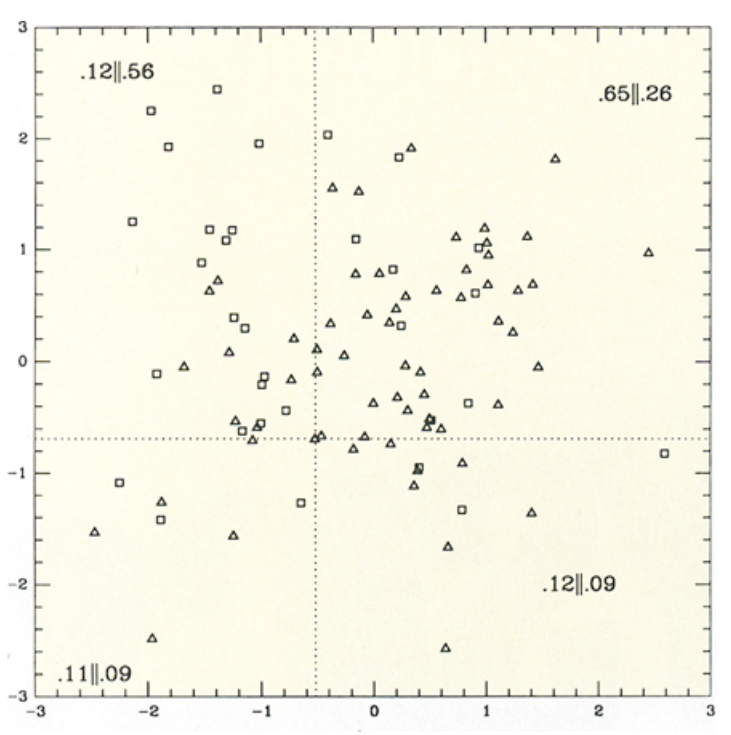

Exercise 1.
In this lab, we reproduce the calculation carried out in Press and Teukolsky (1988). The calculation will be directly applicable to Problem 2 of Homework #4. We will be applying a Kolmogorov-Smirnov-type analysis to a 2D RV distribution, although the CDF for a 2D distribution is not well-defined.
- Create a Jupyter Notebook press.ipynb for this calculation.
- Start by reading in the 2D data contained in Press and Teukolsky Figure 1, from the files ptdata.squares.dat and ptdata.triangles.dat. (These data were taken directly from Figure 1 by the instructor.) It would be a good idea to make a scatter plot of both datasets, to compare with Press and Teukolsky's figure.

- Create a function quadct to return the normalized fraction in each quadrant. This will be nothing more than a Python version of Press and Teukolsky's SUBROUTINE QUADCT (originally in FORTRAN).
- Create a function QKS to compute KS probability (Equation 3 of Press and Teukolsky). You obviously can't count an infinite number of terms, so you'll need to pick a cutoff for j. Start by choosing jmax = 10, later test if your results change when you vary this.
- Create a function ks2d2s which calls quadct and QKS, to generate the 2D KS statistic and chance probability.
- Lastly, your main script should call ks2d2s, with the x- and y-values of the two RVs (four arrays of numbers in all).
- As a last step, print out your results in the format
The 2D KS statistic is: x.xxxxx
The probability is: x.xxxxx
and compare your results with those of Press and Teukolsky. If your agreement is reasonable, you may proceed to Homework #4 with confidence.